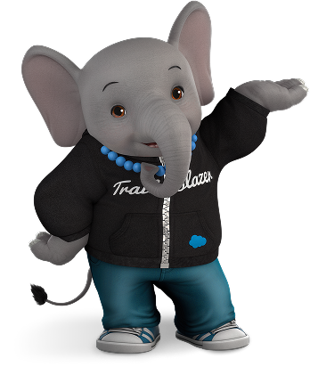
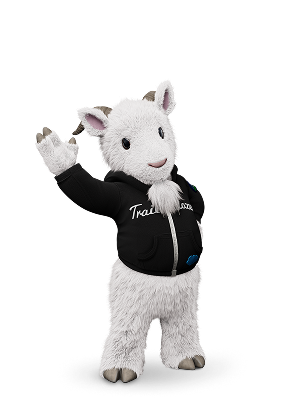

Business blueprints, adoption dashboards, change management frameworks, and solution architectures that drive Agentforce ROI.
Discover open-source solutions built by the community, for the community. Explore business frameworks, code, Slack skills, and more to accelerate your own projects and learning.
Whether you're an Accidental Admin, Sales Ops Expert, Developer, or Architect, Trailblazer Labs is your hub to learn and build. Explore ready-to-use resources to overcome your roadblocks, or pitch an idea of your own. If selected, your innovation — whether no-code, low-code, or pro-code - will get a platform to scale.
Legal disclaimer: DISCLAIMER. All projects, code, and documentation hosted or featured on this page are provided under the Apache License, Version 2.0 unless explicitly stated otherwise. All software and materials are provided strictly on an "AS IS" basis. Salesforce, Inc. makes no warranties, representations, or conditions of any kind, express or implied, including but not limited to warranties of title, non-infringement, merchantability, or fitness for a particular purpose. You are solely responsible for determining the appropriateness of using or redistributing these projects and assume any and all risks associated with doing so. The hosting, listing, or public display of third-party open-source projects on this GitHub page does not constitute an endorsement, recommendation, sponsorship, audit, or security verification by Salesforce, Inc.
DF26 Cohort
Inspired by “Artist in Residence” programs, we elevate top community contributors by providing a dedicated platform to evangelize their solutions and scale their impact.
Our process
Pitches fall into one of three tracks. Find the one that fits your idea before you pitch.

Business blueprints, adoption dashboards, change management frameworks, and solution architectures that drive Agentforce ROI.

Declarative flows, Agentforce prompts, custom skills, and low-code automations designed for rapid deployment.
Custom Lightning Web Components (LWCs), Slackbots, API integrations, and developer tooling pushing the boundaries of the platform.
Our 100% GitHub-native architecture makes sharing and adopting solutions frictionless.
Pitch Your Idea
We're looking for real platform challenges and bold solutions from the community.
Community Upvoting
The Trailblazer ecosystem votes on ideas to signal real demand.
Cohort Selection
Top ideas are selected for the upcoming Builder in Residence cohort.
Shared with Everyone
Assets are hosted in transparent GitHub repositories for anyone to explore and adopt.